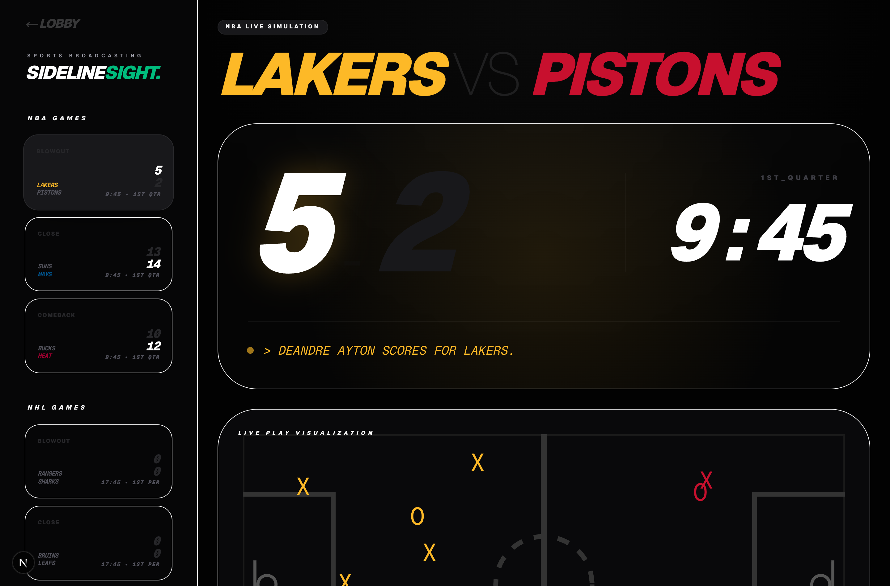
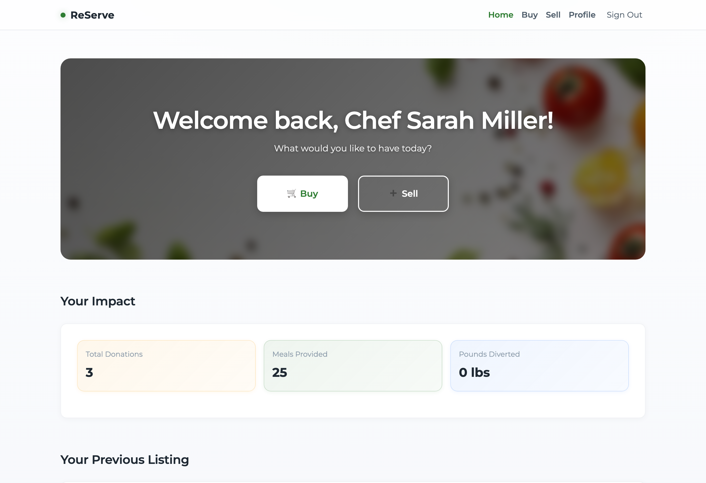
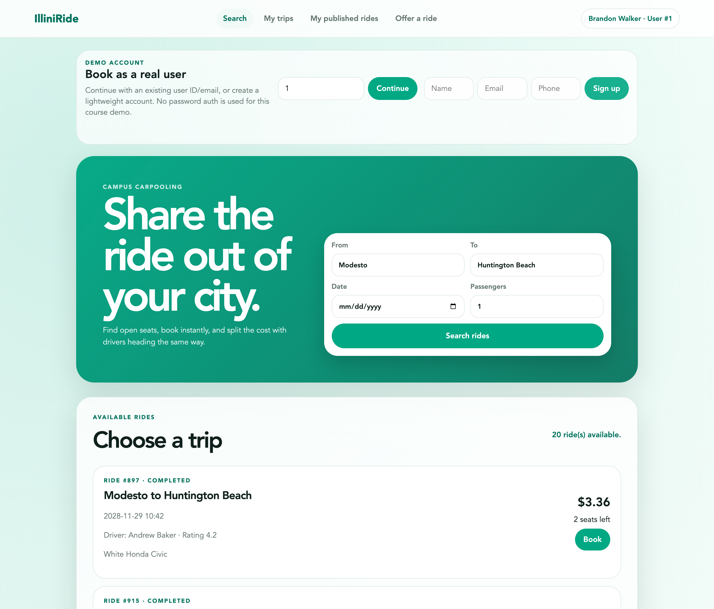
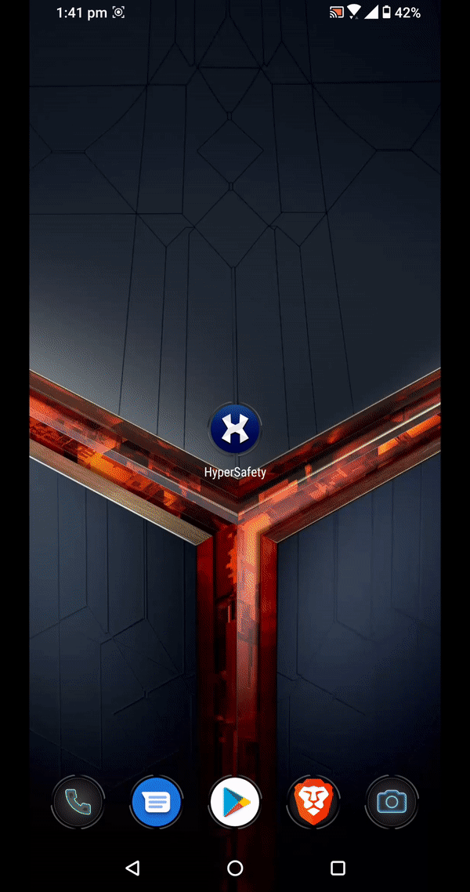
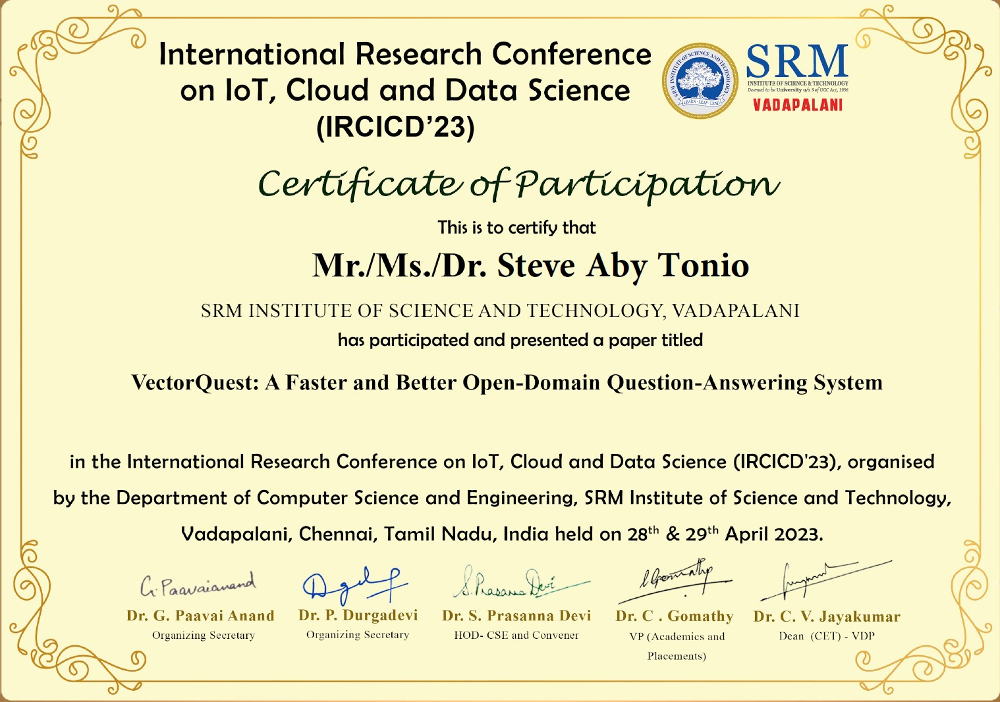

SYSTEM_BOOT // STEVE.DEV
Computer Science Master’s Student at UIUC specializing in Artificial Intelligence, Machine Learning, and Enterprise Software Systems. Formerly Summer Analyst at Morgan Stanley | Parametric and Graduate Analyst (SDE II) at Barclays Bank PLC.
Bridging the gap between complex AI/ML models and high-performance enterprise applications.

I am a Computer Science Master’s student at the University of Illinois Urbana-Champaign (UIUC) focused on advancing Artificial Intelligence, Natural Language Processing, and scalable software architecture.
Most recently, I served as a Summer Analyst (Platform Implementation Intern) at Morgan Stanley | Parametric in Seattle, WA, where I engineered a Portfolio Manager AI Chat POC that reduced client meeting prep from 1-2 days to minutes, built automated release pipelines with AI Agents, and streamlined enterprise Salesforce reconciliation.
Prior to UIUC, I served as a Graduate Analyst / Software Engineer (SDE II - BA4) at Barclays Bank PLC, where I spearheaded enterprise marketing automation workflows across multiple business units, resulting in a 5x operational efficiency boost and saving over 50x in operational overhead while earning 25+ Director & Executive awards.
My published research in Springer Nature introduced VectorQuest, an open-domain QA algorithm achieving 50x faster prediction speeds.
Track record of building reliable software systems, cloud automations, and AI tools.
Interactive showcase of intelligent software applications, real-time WebSocket systems, and AI engines.

Next-generation sports analytics platform and cognitive-adaptive live dashboard streaming high-frequency NBA/NHL game simulations via FastAPI WebSockets with interactive SVG shot tracking and game-state momentum reordering.

An intelligent AI Pokémon Strategist that mathematically optimizes competitive teams against the global meta using Monte Carlo tree search, FastAPI, Smogon calculation engines, and Modal Cloud parallel compute.

Campus surplus food marketplace designed to curb dining hall food waste in real time, featuring automated expiration cleanup cron jobs, role-based access control, live impact telemetry, and JWT/OAuth auth.

High-performance campus ridesharing platform built with raw MySQL stored procedures, triggers, and serializable ACID transactions for automated geospatial distance pricing and instant driver rating recalculation.

Workplace safety management system integrated with custom CNN face mask detection (98.95% accuracy) and facial recognition automatic warning logs with Flutter client and Node.js backend.
Core technical stack, engineering frameworks, and formal industry credentials.
Verified industry credentials across Salesforce Enterprise AI, HackerRank Problem Solving, Oracle Cloud, Python Computing, and Professional Banking Systems.
Agentforce Specialist (5754768), AI Associate (5624840 • Legacy) & Email Specialist (5501094)
Data structures, algorithmic complexity, computational logic & code optimization
Relational database architectures, data modeling, SQL queries & PL/SQL constructs
Algorithms, computational thinking, recursion, and data manipulation
Commercial credit structures, liquidity risk, banking workflows, and fiscal mechanics
Academic contribution to Open-Domain Question Answering efficiency.
Unlike traditional reading comprehension QA systems that require users to provide background context, Vector Quest enables unrestricted open-domain question answering. We designed a novel vector knowledge storage technique that predicts answers 50 times faster than existing baseline models evaluated on SQuAD benchmarks.
ACCESS PUBLICATION SOURCE
Interact via web command prompt or initiate direct comms channels.
Ready to initiate technical collaboration protocols?